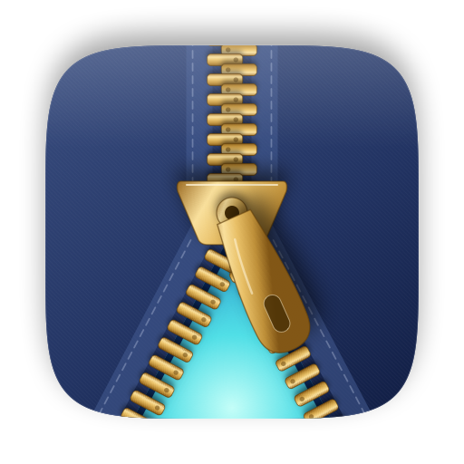
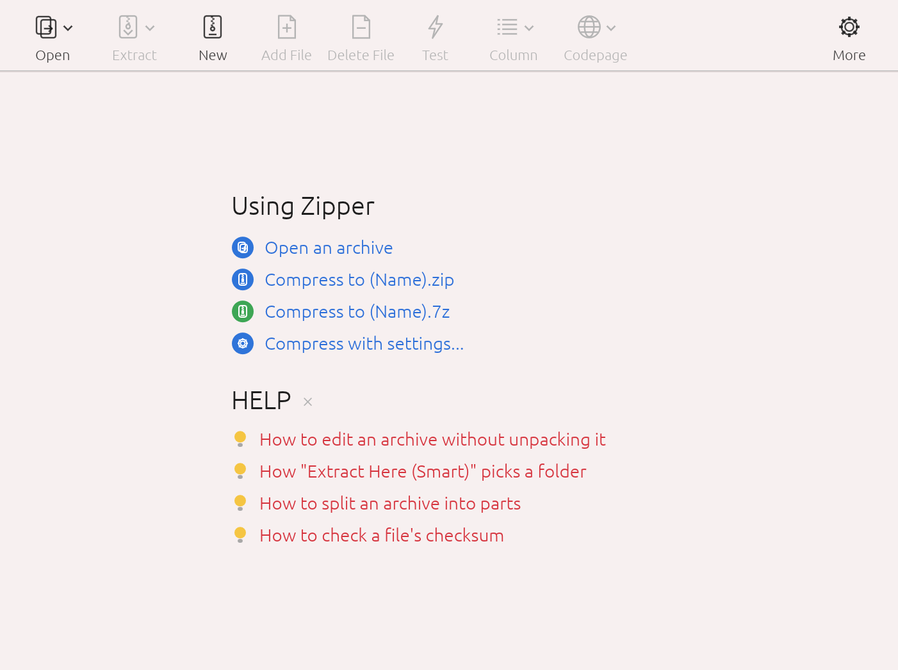

Mac の圧縮・解凍は
Zipper ひとつで
ZIP・7Z を作成し、RAR・EGG・ALZ などもそのまま展開。ファイル名が文字化けしないので、Windows ユーザーとのやり取りも安心です。

主な機能
よく使う操作はワンクリックで、細かい設定は必要なときだけ。
作成・展開・編集
ZIP、7Z、TAR、GZ を作成・展開できます。ウインドウにドロップすればアーカイブは開き、その他のファイルは圧縮。ZIP は展開せずに編集できます。
30 以上の形式に対応
RAR、EGG、ALZ、ISO、CAB、LZH など古い形式まで、受け取ったアーカイブのほとんどをすぐに開けます。
文字化けしないファイル名
ファイル名を合成済み Unicode（NFC）で保存し、Shift-JIS や CP949 などのコードページを自動検出。Windows のアーカイブも正しく表示します。
AES-256 暗号化
ZIP と 7Z に AES-256 のパスワードを設定でき、7Z ではファイル名も隠せます。暗号化された EGG（AES/LEA）や ALZ も展開できます。
スマート展開
中身が 1 つのフォルダに入っていればその場に、そうでなければアーカイブ名のフォルダを作って展開するので、ファイルが散らばりません。
分割圧縮
メール添付（25MB）、CD、DVD、FAT32（4GB）など好きなサイズで分割でき、分割ファイルもそのまま開けます。
テストとチェックサム
アーカイブの破損をテストし、任意のファイルの CRC32・MD5・SHA-1・SHA-256 を確認できます。
きれいなアーカイブ
.DS_Store、__MACOSX、リソースフォークを除いて圧縮するので、Windows でもすっきり表示されます。
4 言語・ダークモード
日本語、英語、韓国語、中国語に対応し、システムの言語に従います。ライト／ダークテーマを選べます。

スタート画面 — アーカイブを開く、新規作成、ドロップ、クイック ZIP/7Z 圧縮をひとまとめに
対応形式
作成できる形式と、開いて展開できる形式があります。
作成・展開・テスト
開く・展開・テスト
ZIP は展開せずにその場で編集できます。分割アーカイブ（.001、.z01、.a00、.vol1.egg、RAR ボリューム）や、EXE 自己解凍ファイル内の ZIP/7Z/RAR/ALZ/EGG も開けます。
インストール
アプリを「アプリケーション」フォルダに移すだけです。
- ダウンロードGitHub のリリースページから最新の
Zipper.app.zipをダウンロードして展開します。 - 「アプリケーション」へ移動
Zipper.appを「アプリケーション」フォルダにドラッグします。 - 初回の起動Apple の公証を受けていない個人配布アプリのため、初回起動時に警告が表示されます。ゴミ箱に入れる は押さずに 完了（macOS 14 以前は キャンセル）で閉じ、
システム設定 → プライバシーとセキュリティの下部にある このまま開く をクリックします。
ターミナルを使う場合は、次の 1 行でも同じです。
xattr -dr com.apple.quarantine /Applications/Zipper.app
よくある質問
本当に無料ですか？
はい。個人・法人を問わず無料で使えます。
ALZ や EGG を展開できますか？
はい。分割 ALZ（.a00、.a01…）、パスワード付きファイル、AES/LEA 暗号化・ソリッド・分割の EGG にも対応しています。ALZ と EGG の作成には対応していません。
Windows で展開するとファイル名が文字化けしませんか？
しません。Zipper は Windows が想定する形式（NFC と UTF-8 フラグ）でファイル名を保存するため、エクスプローラーでも正しく表示されます。
RAR を作成できますか？
RAR は開く・展開のみです。作成には ZIP か 7Z をお使いください。
インターネットに接続したり、ファイルを送信したりしますか？
いいえ。すべての処理は Mac の中だけで行われます。
言語はどう変更しますか？
既定ではシステムの言語に従います。環境設定 → 一般 → 言語 で変更するとすぐに反映されます。
ソースコードは公開されていますか？
いいえ。Zipper は実行ファイル（アプリ）のみを配布するフリーウェアで、ソースコードは公開していません。
ライセンス
個人・法人を問わず完全無料のフリーウェアです。料金、登録、ライセンスキーは不要です。
誰でも無料
個人・家庭はもちろん、会社・団体・学校などの業務・商用利用も可能です（台数制限なし）。
再配布可
改変していないオリジナルをライセンスとともに無料で再配布できます。
リバースエンジニアリング禁止
唯一の制限です。逆コンパイル・逆アセンブル、実行ファイルの改変・パッチを禁止します（法律で認められる場合を除く）。
データ収集なし
インターネットに接続せず、情報を一切収集しません。「現状のまま」提供され、保証はありません。